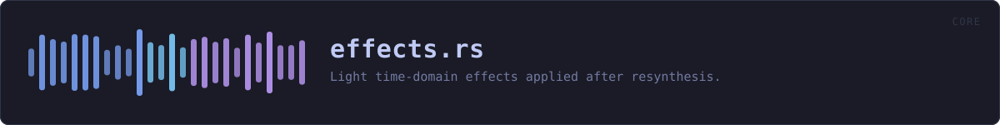

crates/veilvoice-core/src/effects.rs
veilvoice-core · 177 lines · read the source
Light time-domain effects applied after resynthesis.
These run on the continuous output stream (not per FFT frame) and exist to (a) further decorrelate the signal from the original, and (b) add a few detuned "voices" so the spectrogram is densely filled rather than showing a clean harmonic stack — without harming intelligibility, so every mix defaults low. None of them are invertible in a way that recovers the source voice.
WHAT CALLS WHAT
The functions this file defines, and the calls between them. An edge means the callee's name appears, called, inside the caller's body — a syntactic reading, not a type-resolved one.
The same graph as Mermaid source
%%{init: {"theme":"base","themeVariables":{"background":"#1a1b26","primaryColor":"#1f2335","primaryTextColor":"#c0caf5","primaryBorderColor":"#7aa2f7","secondaryColor":"#16161e","tertiaryColor":"#16161e","lineColor":"#565f89","textColor":"#c0caf5","mainBkg":"#1f2335","nodeBorder":"#7aa2f7","clusterBkg":"#16161e","clusterBorder":"#2f3549","fontFamily":"ui-monospace, SFMono-Regular, Consolas, monospace","fontSize":"14px"}}}%%
flowchart TD
n_new(["SoftClip::new<br/>pub"])
n_process(["SoftClip::process<br/>pub"])
n_new["DelayVoice::new"]
n_process["DelayVoice::process"]
n_new(["Chorus::new<br/>pub"])
n_process(["Chorus::process<br/>pub"])
n_new(["Reverb::new<br/>pub"])
n_process(["Reverb::process<br/>pub"])This site loads no third-party script, so it cannot run Mermaid; the diagram above is the same nodes and edges drawn by the generator instead. GitHub renders the source below directly.
ITEMS
| Item | Line | Documentation |
|---|---|---|
SoftClip pub struct | 14 | Symmetric soft-clip (tanh) waveshaper. |
SoftClip::new pub fn | 21 | |
SoftClip::process pub fn | 30 | |
DelayVoice struct | 38 | A single modulated delay line, summed into a small ensemble to create the impression of several slightly different voices. |
DelayVoice::new fn | 48 | |
DelayVoice::process fn | 62 | |
Chorus pub struct | 79 | Detuned chorus ensemble. |
Chorus::new pub fn | 85 | |
Chorus::process pub fn | 98 | |
Reverb pub struct | 110 | Minimal Schroeder-style reverb: one feedback comb + one all-pass. |
Reverb::new pub fn | 121 | |
Reverb::process pub fn | 135 |